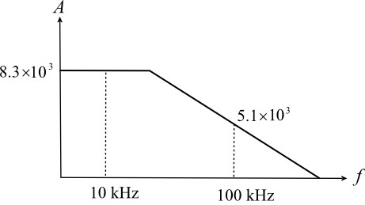

The gain of the non-inverting amplifier is,
Substitute for  , for
, for  and 100 kHz for
and 100 kHz for  .
.
Simplify further.
Thus, the 3-dB frequency of an internally compensated operational amplifier,  is
is
.
The open loop gain of an internally compensated operational amplifier for high frequencies is,
At 100 kHz, the open loop gain is,
At 10 kHz, the open loop gain is,
Draw the magnitude plot.

From the plot, the dc gain of an internally compensated operational amplifier is,
.
The gain of the non-inverting amplifier is,
Substitute for , for and 100 kHz for .
Simplify further.
Thus, the 3-dB frequency of an internally compensated operational amplifier, is
.
The unity-gain frequency is,

Thus, the unity-gain frequency of an internally compensated operational amplifier,  is
is
.